Type:
Personal Project
Length:
Three Days
Tools:
Sketch,
Photoshop,
InVision
Specal Shoutout:
Iconfinder
I decided to take on this project because I drink coffee by the gallon and whenever I ordered with the Starbucks app, I was never fully satisfied with the experience. I decided to pinpoint the problems and create my own solutions for them.
Bottom Nav Bar
I first started by doing a complete overhaul on the design and decided to add a bottom nav bar. I did this because this form of navigation is found in most major mobile applications. This will allow the redesign to feel more familiar when switching between apps and prevents user friction.
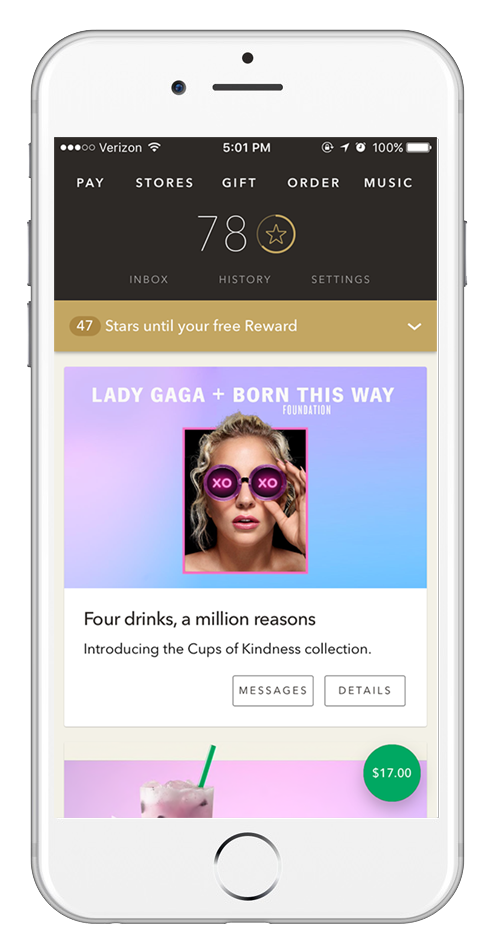 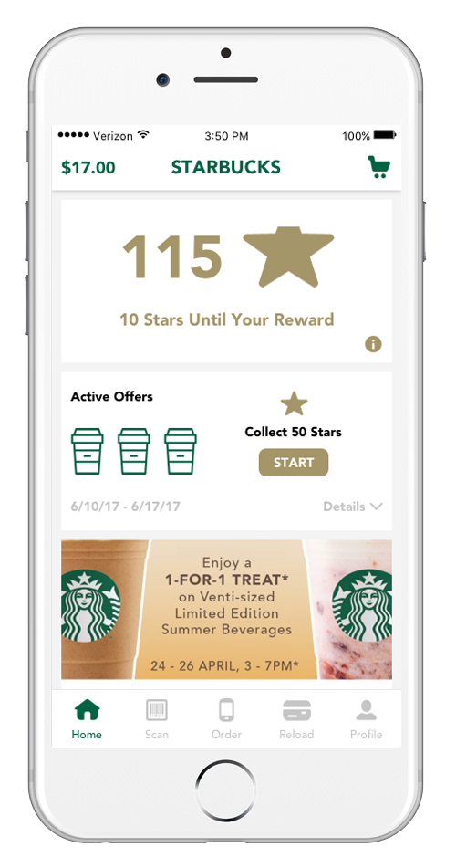
Current Design: Left
My Redesign: Right
Quick and easy navigating
The bottom nav also provides quick and direct access to the most used functions of the app.
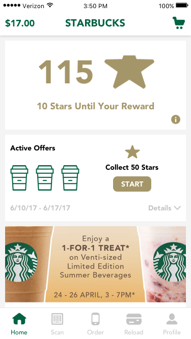 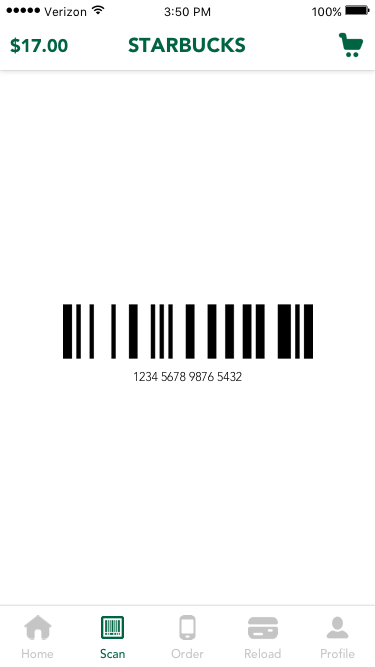 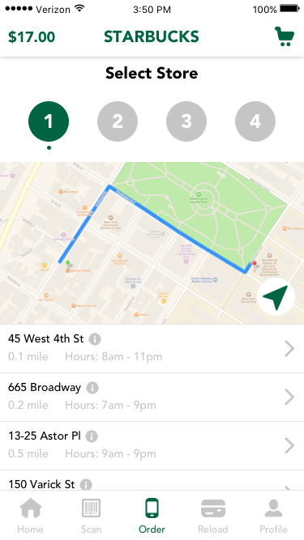 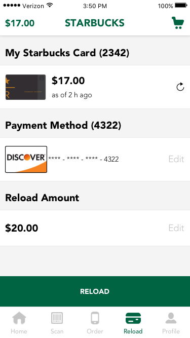 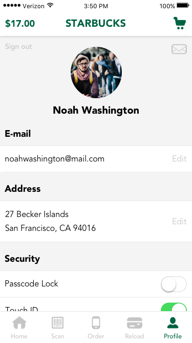
Redundant and Unclear
A problem I had with the user experience is the store selection. The store selection option is located at the bottom of the screen throughout the entire ordering process.
While this is convenient, if the user doesn't interact with the store locator at all up until purchase (in the case that the store location automatically listed from GPS tracking is where the user wants to go), the user ends up being redirected to a different store locator screen entirely and prompted again to select a location, resulting in redundancy.
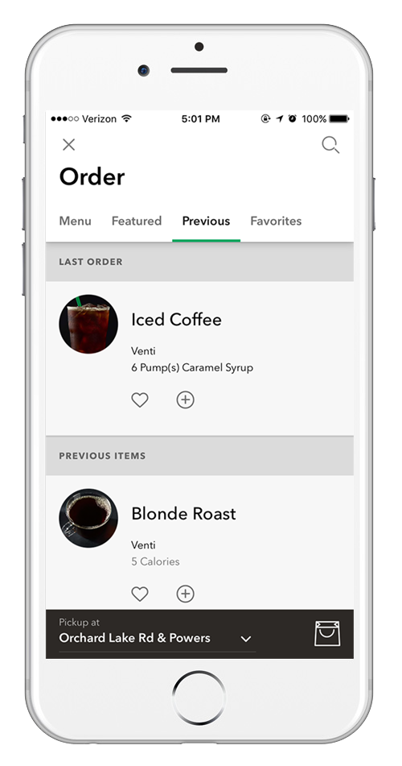Another problem I had when I was ordering is the lack of knowing where I was through the entire ordering process. Is this button going to accidentally purchase my drink? Is this option going to favorite my drink? How much longer before I can checkout? I wasn't sure.
My Solution: Wizards
My solution to these problems was to have a wizard-like visual representation of the entire mobile ordering process.
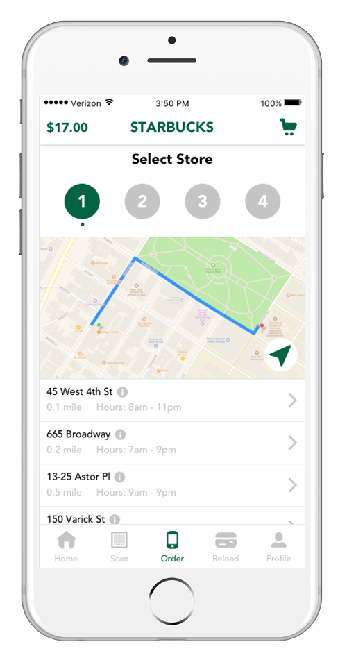 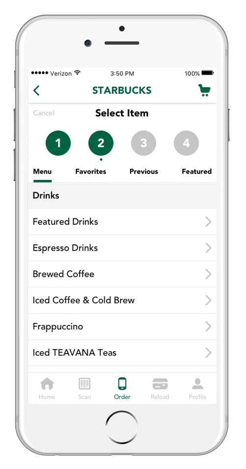 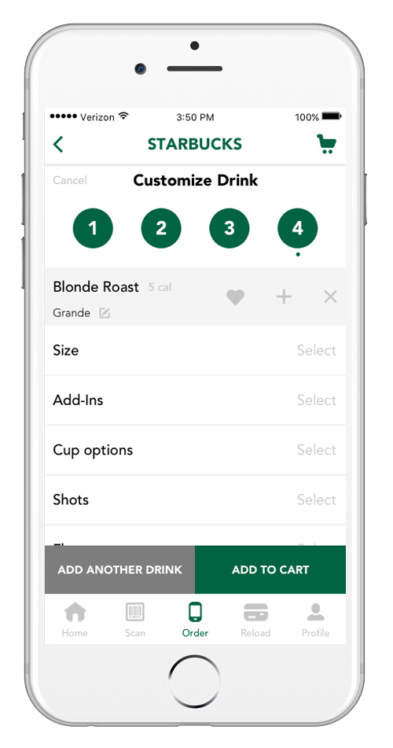
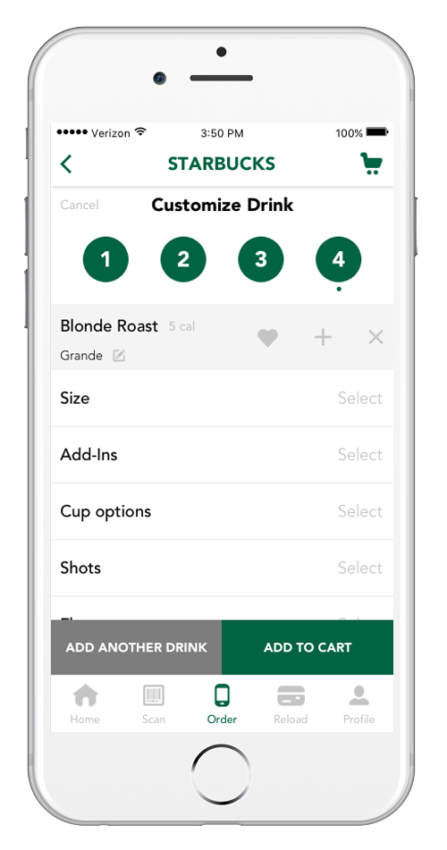
I had the location selection prompted at the beginning because it would be frustrating to have to create an entire order only to find out at the end that it wasn't in stock. With location as the first step, you know right away. Each part of the selection process is clearly stated with the circular timeline at the top of the screen. Users will be able to know where they are in their order and have quick access to each section if they want to make edits.
Easier transitions between selections
I also changed the UI for customizing drinks from separate screens to modals. They are also used for confirmation after a user action which helps provides confident affirmation in selections.
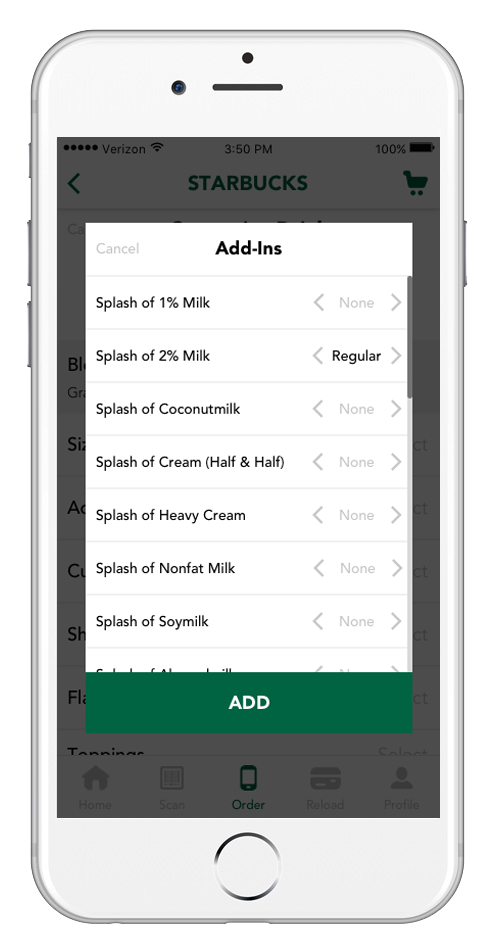 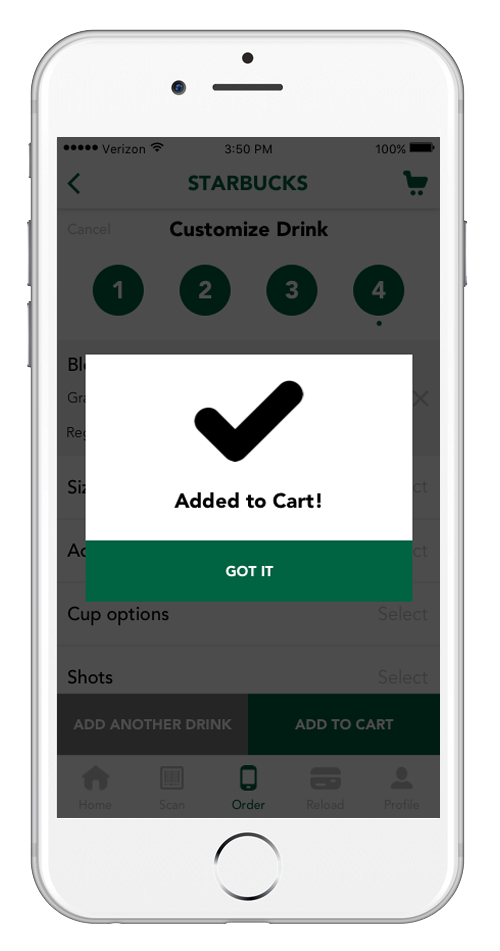 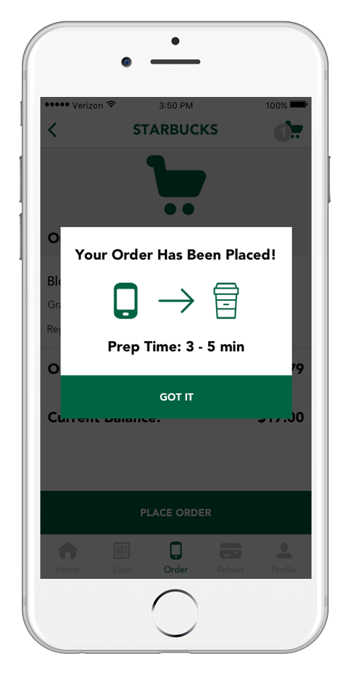
Play